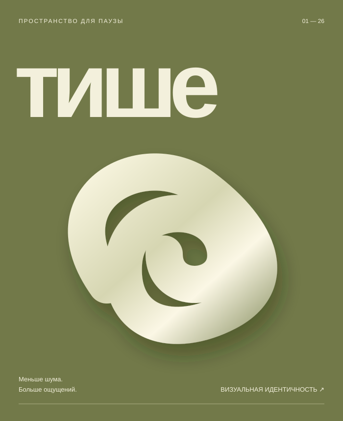

Независимый взгляд.Разные грани дизайна.
Форма.
Смысл.
Характер.
Соединяю идеи и визуальный язык.
Айдентика, графика и издания —
с вниманием к каждой детали.

01 / В фокусеАйдентика «Тише»
Демонстрационный проект
Демонстрационный проект
Визуальные истории,
объединённые одним взглядом.Смотреть работы
объединённые одним взглядом.Смотреть работы
01 / ПортфолиоАйдентика · Графика · Издания · Digital
Избранное(04)
Разные задачи.
Цельный визуальный подход.
Здесь показаны вымышленные проекты для оценки композиции. Заменим их реальными работами Надежды.